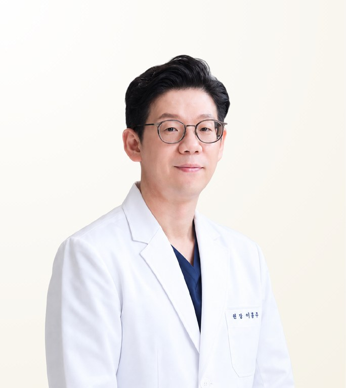

Reviewed by STMSTYLE
Lee Jong Hoon
ลี จงฮุน · 이종훈
Gangnam Hera Plastic Surgery · Board-certified Plastic Surgeon
- Hybrid Lifting
- Thread Lifting
- Under-Eye and Eyelid-Hollow Filler
- Experience
- 25+ years in practice
- Clinical experience
- 20+ thread-lifting hands-on seminars and live demonstrations for physicians, plus numerous academic presentations on thread lifting, facelift, midface, neck, double chin, nasolabial folds and combined filler treatment since 2013
- Recommended Stay
- 1–2 days
About the Doctor
Dr. Lee Jong Hoon is a board-certified plastic surgeon and director at Gangnam Hera Plastic Surgery in Seoul, known for thread lifting and anatomy-based hybrid lifting that combines threads, filler and devices according to the cause of sagging in each area. With more than 25 years of experience, he is a co-author of LIFTINGOLOGY and has led over 20 hands-on seminars and live demonstrations in thread lifting for physicians.
Case Expertise
Hybrid Lifting
Thread lifting, filler and ultrasound or radiofrequency devices are combined and allocated by facial area. Whether descent or volume loss is the main problem is identified first, and a different method is applied to each area.
Thread Lifting
Descended tissue in the midface and lower face is lifted with absorbable threads, including APTOS threads. Because the two areas sag for different reasons, each is approached differently, with thread direction and number set from the retaining ligaments.
Under-Eye and Eyelid-Hollow Filler
Improves hollowing and shadow under the eyes and in the upper eyelid. As the skin here is thin and irregularity develops easily, injection layer and volume are adjusted with care.
Other treatments available
Materials & Equipment
Video
Q&A video with the doctorAsk our team on LINE for more informationPhilosophy of Care
The causes of midface descent and lower-face laxity are distinguished first, then threads, filler and combined procedures are put together. Balanced improvement matched to the structure of the whole face and the direction of ageing matters more than any single procedure.
— Lee Jong Hoon
STMSTYLE Assessment
STMSTYLE sees Dr. Lee Jong Hoon's strength as anatomy-based hybrid lifting that distinguishes the causes of midface descent from lower-face laxity and combines minimally invasive treatments such as thread lifting and filler. With extensive experience teaching and demonstrating lifting for physicians in Korea and abroad, he assesses facial structure and the direction of ageing in three dimensions. STMSTYLE recommends him for patients who want to improve sagging and volume across the whole face with less burden than open surgery.
STMSTYLECareer & Training
View full background
Education
- Chungnam National University College of Medicine
- Advanced Executive Programme, Graduate School of Public Health, Seoul National University
Licences & certification
- Korean Board certification in Plastic Surgery
- Official APTOS Professional Course completed 2026
- Minister of Health and Welfare Award
Career
- Director, Gangnam Hera Plastic Surgery
- Former Chief Director, Maybon Plastic Surgery, Apgujeong
- Speaker, faculty, chair and moderator at domestic and international aesthetic medicine congresses 2013–2026
- More than 20 hands-on seminars and live demonstrations in thread lifting for physicians
- Clinical instructor, KAFC Cadaver Workshop 2023
- Live demonstrator for Brazilian physicians 2025
- Co-author, LIFTINGOLOGY
Professional memberships
- Board Director, Korean Society of Aesthetic Surgery
- Board Director, International Society of Petit Medicine
- Founding member, Korean Association for Facial Contouring and Lifting (KAFC)
Frequently Asked Questions
Is Dr. Lee Jong Hoon good at thread lifting?
Yes. Thread lifting is Dr. Lee Jong Hoon's core specialty. He is a co-author of LIFTINGOLOGY, has led more than 20 hands-on seminars and live demonstrations for physicians, and served as a clinical instructor at the 2023 KAFC Cadaver Workshop.
What kind of patients is Dr. Lee Jong Hoon best suited for?
Dr. Lee Jong Hoon is well suited to patients with midface or jawline sagging who want a natural, youthful result without open surgery. He identifies the cause of sagging and volume loss in each area before combining threads, filler and devices. Suitability is confirmed at an in-person consultation.
How long should I stay in Korea for treatment with Dr. Lee Jong Hoon?
The recommended stay for treatment with Dr. Lee Jong Hoon is 1–2 days. If several areas are combined, the clinic reviews overlapping treatments before giving one plan, so please share your previous filler and thread history and travel dates in advance.
What threads and fillers does Dr. Lee Jong Hoon use?
Dr. Lee Jong Hoon uses MINT and MINT Easy threads for lifting, Korean and imported fillers, and Korean and German botulinum toxin, including a formulation with complexing proteins removed to reduce the chance of antibody formation with repeated treatment.
Does Dr. Lee Jong Hoon treat patients personally, and can I consult through STMSTYLE?
Yes, Dr. Lee Jong Hoon performs treatments personally as a director of the clinic. Patients can begin a consultation through STMSTYLE in Bangkok via LINE or WhatsApp, and STMSTYLE confirms schedules and conditions with the clinic. The final plan and cost are set after an in-person consultation.
Sources
View sources and review record
| Item | Source | Checked |
|---|---|---|
| Education, licence and career | 2026 Korean/English CV and licence provided by Gangnam Hera Plastic Surgery | 2026-08-30 |
| Publication | LIFTINGOLOGY (co-authored book) | 2026-08-30 |
| Lectures and live demonstrations in Korea and abroad | Congress and seminar materials provided by the clinic | 2026-08-30 |
| Treatment and package information | Gangnam Hera Plastic Surgery official blog | 2026-08-30 |
| In-person meetings and patient coordination | STMSTYLE direct review through collaboration | 2026-08-30 |
Review record · 2026-08-30
STMSTYLE reviewed Dr. Lee Jong Hoon's profile through long-term collaboration, in-person meetings, patient coordination and cross-checking against his latest CV and the clinic's official materials.